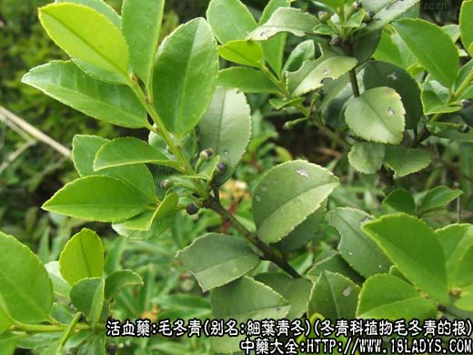
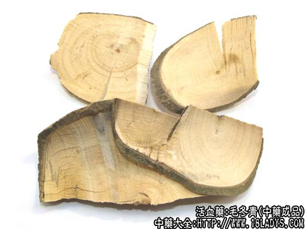
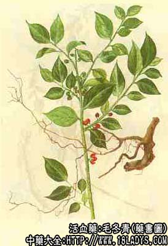

毛冬青为少常用中药。载自《广西中草药》。
别名：细叶青冬、六月霜。
来源：为冬青科植物毛冬青的根。毛冬青叶亦供药用。均为野生。
产地：主产于广东、广西、福建、浙江等地。
性状鉴别：根呈不规则块片，外皮灰褐色，略粗糙，易剥落，有纵行细纹。质坚。断面淡黄色，木质部纹理紧密。无臭，味微苦涩。
主要成分：根、皮含多种黄酮类、酚性成分、甾醇、氨基酸、糖类、鞣质等。
功效与作用：1、对心血管有扩张作用，增加冠脉血流量而持久，作用大于硝酸甘油。毛冬青黄酮甙短期内重复应用，有快速耐受性，临床上连续应用效力即降低。
2、对脂质代谢的影响：毛冬青注射液肌肉注射于实验性动脉粥样硬化的家兔，没有明显的降胆甾醇作用，预防性治疗与晚期治疗对主动脉粥样硬化斑块形成均无作用，但早期重复治疗似略有减轻趋势。
3、抗菌作用：初步抑菌试验表明，金黄色葡萄球菌对毛冬青极度敏感；变形、痢疾（弗氏）、绿脓杆菌亦属敏感。
4、镇咳、祛痰作用：毛冬青水煎剂，对小鼠二氧硫引起的咳嗽，有镇咳作用，用小鼠酚红法证明有祛痰作用。
炮制：切片，生用。
性味：微苦涩，性平。
功能：清热解毒、活血通脉。
主治：因热感冒，肺热咳嗽，血栓闭塞性脉管炎，动状动脉硬化心脏病；外治烫伤。
临床应用：1、治疗冠状动脉粥样硬化性心脏病：毛冬青对心绞痛有较好疗效。据报道，治疗100人次，其中显效率达50%左右，有效病例绝大多数在治疗1个多月左右症状显著好转，3个月后少数病人有些反复，但多数人较前减轻。有的地区发现大多数病人治疗1个月左右，心率皆有不同程度的改善，血清胆甾醇有所减低。
2、治疗脑血栓形成有效：每日用毛冬青片60～90g煎汤服，并酌情注射毛冬青针剂，病情发展阶段适当用西药血管扩张剂，病情稳定期即停用西药。治疗6人次，用药后显效日最短者为4天，最长者为16天，基本治愈最长日为52天。但毛冬青只能起到疏导散瘀，从而改善组织供血（氧）作用，但不能代替脑细胞功能的锻炼和恢复。
3、治疗血栓闭塞性脉管炎：据319例的分析，有效率为80.2%，其中治愈率占28.8%，显著好转者占18.8%。
4、祛痰止咳作用：用治肺热咳嗽，本品单用，也可配黄芩，桑白皮等同用；此外，本品粉末油调，对治疗烫伤也有良好效果。
用量：30～90g，外用：研末涂或煎浓汁泡洗。
处方举例：1、治血栓闭塞性脉管炎：毛冬青根片90g，猪爪1只，煨服，每日一次《浙江民间常用中药》。
2、治感冒，扁桃体炎、痢疾：毛冬青片15g，水煎服《浙江民间常用草药》。
附：毛冬青片。
来源：同毛冬青。
性味：苦、涩、平。
功能：清热解毒、止痛消炎。
主治：牙周炎、疖痈，带状疱疹，脓疱疮。